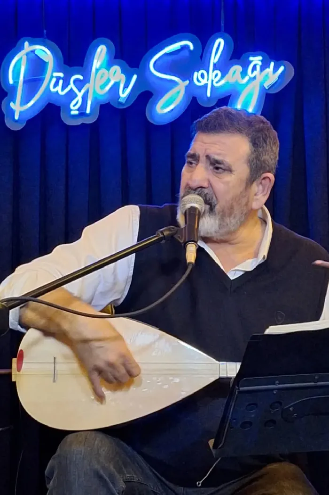
Türkü · Ezgi · Söz
Nurettin Rençber
Dağ türkülerinden deniz şarkılarına; otuz yılı aşkın bir yolculuk.
Dinle
Bütün albümler ve şarkılar dijital platformlarda.
Albümler
Single’lar 8
-
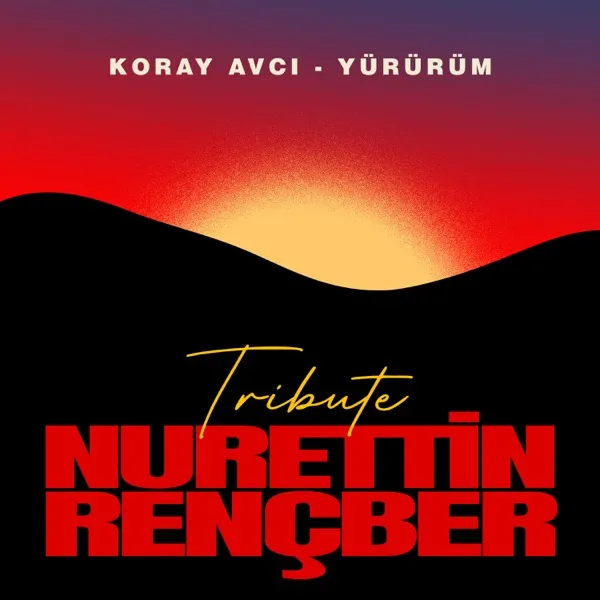
2026Yürürüm (Nurettin Rençber Tribute)Koray Avcı ile -
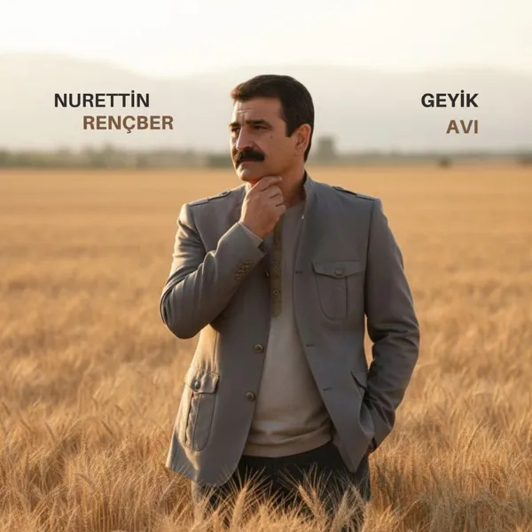
2026Geyik Avı -
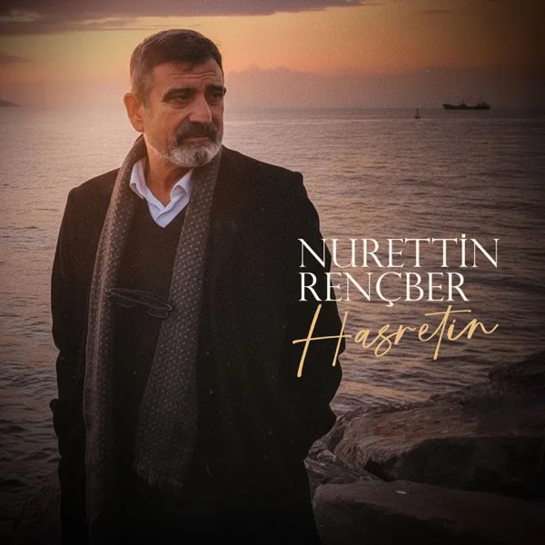
2025Hasretin -
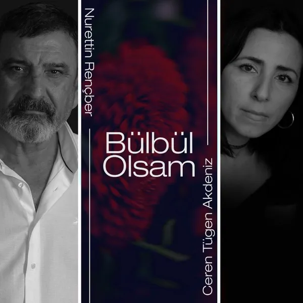
2025Bülbül OlsamCeren Tügen Akdeniz ile -
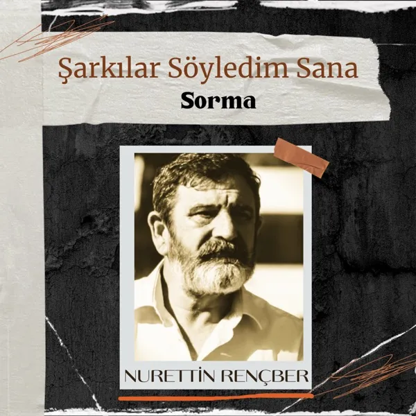
2023Sorma -
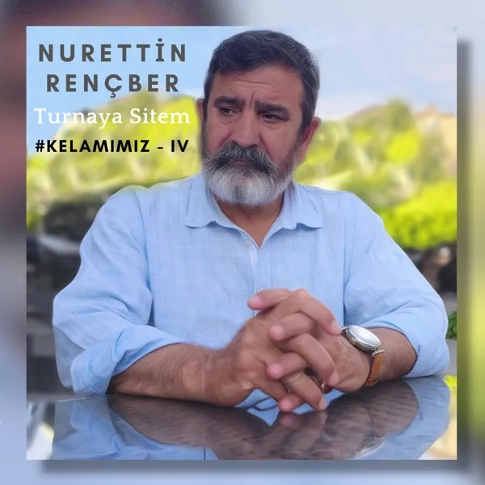
2023Turnaya Sitem -
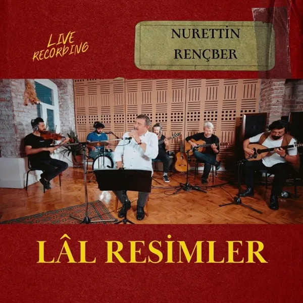
2022Lal Resimler (Live Recording) -
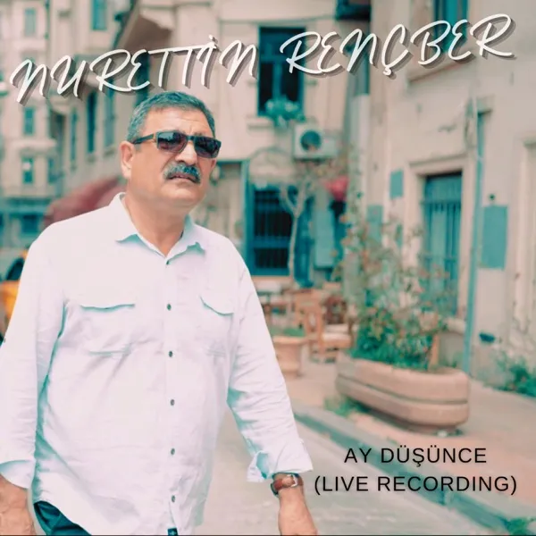
2022Ay Düşünce (Live Recording)
Stüdyo albümleri 11
-
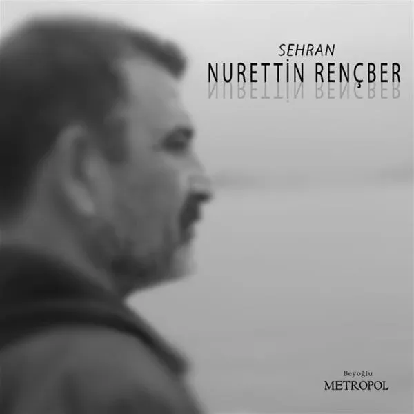
2016Sehran -
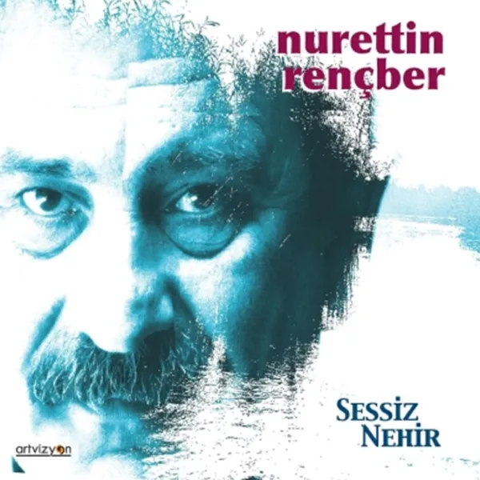
2014Sessiz Nehir -
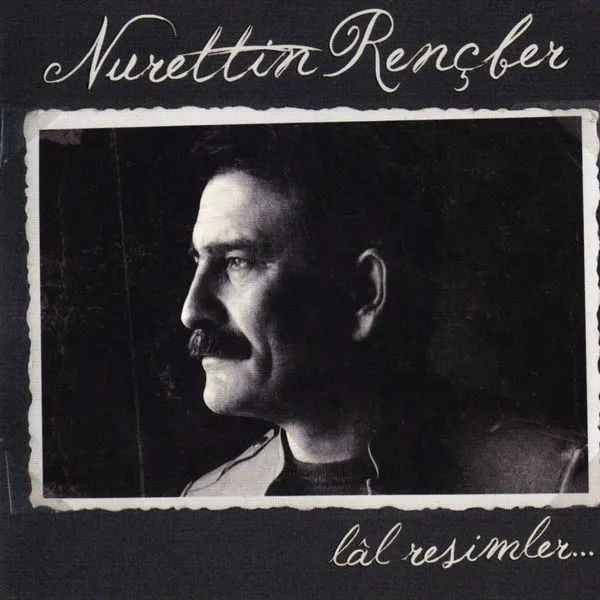
2011Lal Resimler -
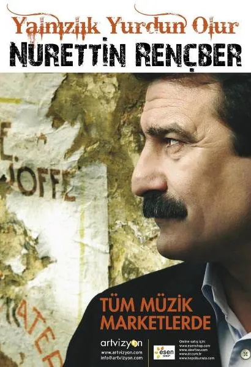
2008Yalnızlık Yurdun Olur -
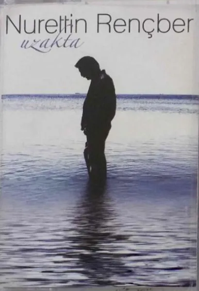
2006Uzakta -
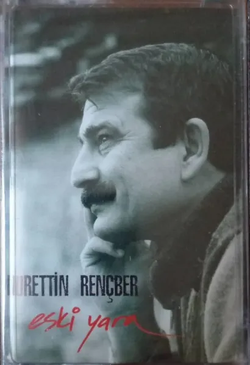
2004Eski Yara -
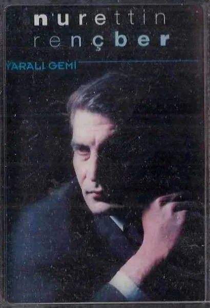
2001Yaralı Gemi -
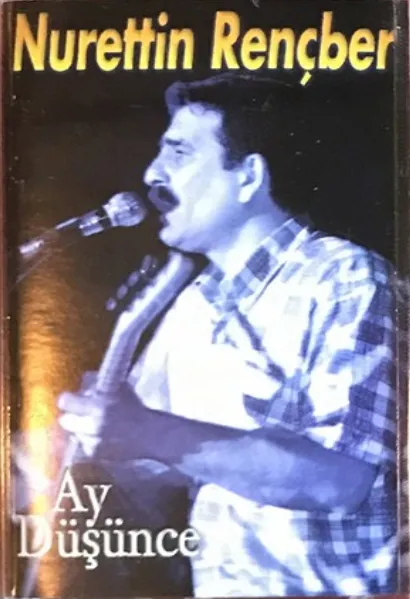
1999Ay Düşünce -
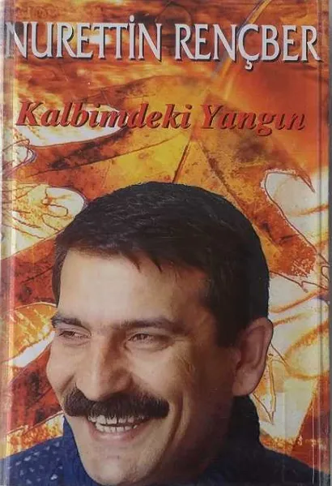
1997Kalbimdeki Yangın -
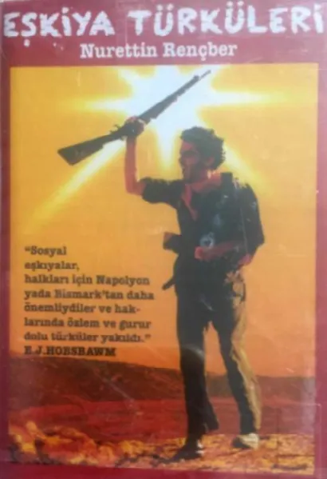
1996Eşkıya Türküleri -
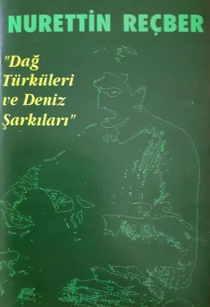
1991Dağ Türküleri ve Deniz Şarkıları
Home Concert serisi 21
- SusŞub 2025
- Nerdesin ŞimdiOca 2025
- KızılırmakAra 2024
- Bu GeceKas 2024
- Yaz YağmuruEki 2024
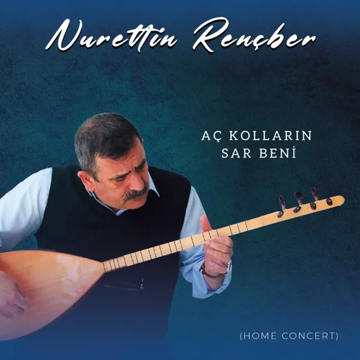
Aç Kolların Sar BeniEyl 2024- Yalnızlık Yurdun OlurAğu 2024
- Unut Artık İstersenTem 2024
- Ay Karanlık GeceHaz 2024
- Lal ResimlerMay 2024
- Sessiz NehirNis 2024
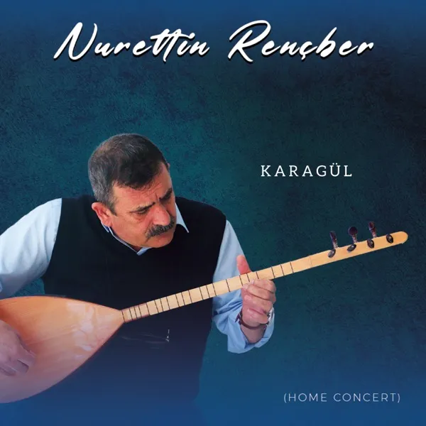
KaragülMar 2024- Bekle BeniŞub 2024
- CiranOca 2024
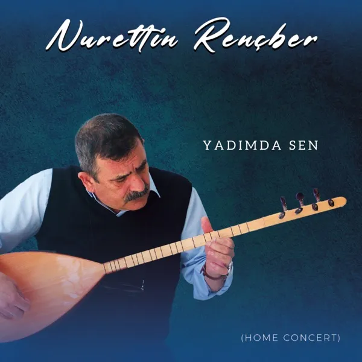
Yadımda SenAra 2023- EzoKas 2023
- Ağlama YarEki 2023
- Aşk Sana BenzerEyl 2023
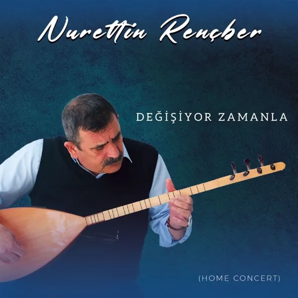
Değişiyor ZamanlaTem 2023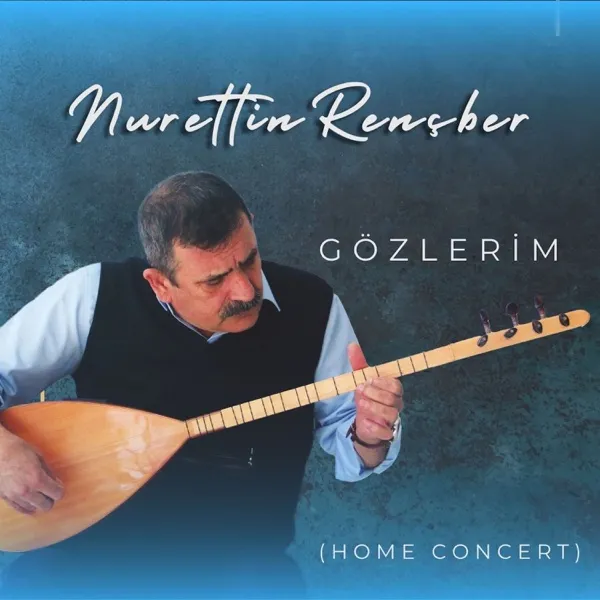
GözlerimOca 2023- YürürümTem 2022
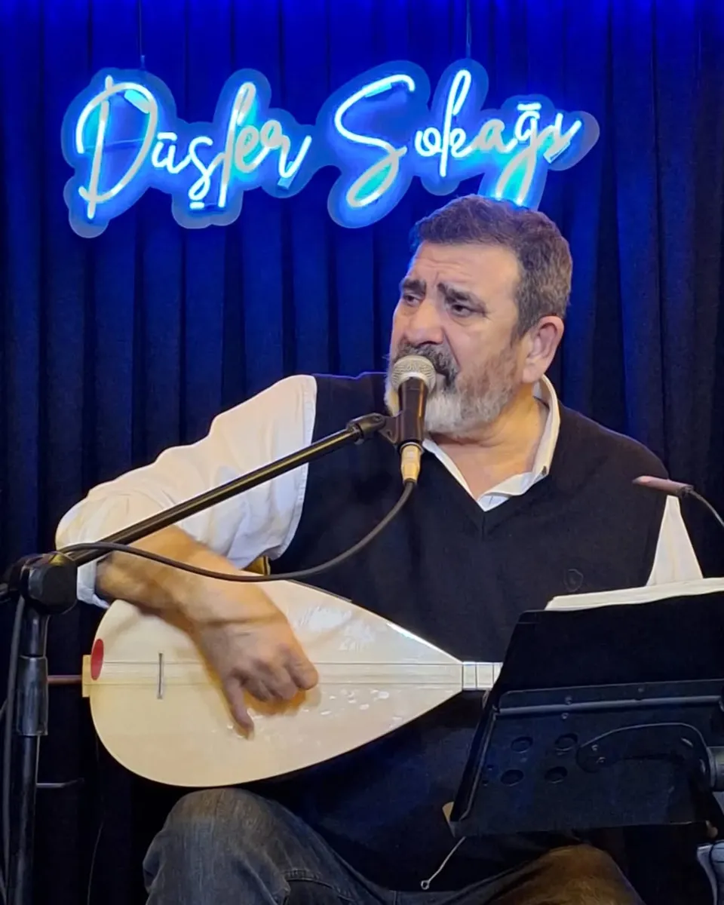
Hakkında
Rençber, Adıyaman’dan göçen bir ailenin çocuğu olarak 1960’ta Mersin’de doğdu. Müzikle tanışması ilk olarak 1977’de bağlama ile oldu. Çocukluğunun çoğu Mersin’de geçti. Liseyi bitirdikten sonra babasının bekçiliğini yaptığı bez fabrikasında çalıştı. 1981’de girdiği Ankara Üniversitesi Dil ve Tarih-Coğrafya Fakültesi’nden 1985’te felsefe öğretmeni olarak mezun oldu.
İlk öğretmenlik deneyimini 1987’de Trabzon’un Tonya ilçesinde yaşadı. Dört sene burada öğretmenlik yaptıktan sonra Eskişehir, Çorum, Kırşehir ve Ankara’da görev yaptı. 2000 yılında öğretmenliği bıraktı.
Nurettin Rençber müzik yaşamına öğretmenlik görevini sürdürürken başladı. İlk albümü Dağ Türküleri ve Deniz Şarkıları’nı 1991’de yayınladı.
Videolar
Kanala abone ol-
Geyik Avı(Ben de Gittim Bir Geyiğin Avına)
-
TURNAYA SİTEM
-
Bu Yıl Bu Dağların Karı Erimez
-
Gitme Turnam Gitme (Turna Semahı)
-
Ben Melamet Hırkasını
-
Gafil Gezme Şaşkın


İletişim
Konser, organizasyon ve basın talepleri için menajerlik ile iletişime geçebilirsiniz.